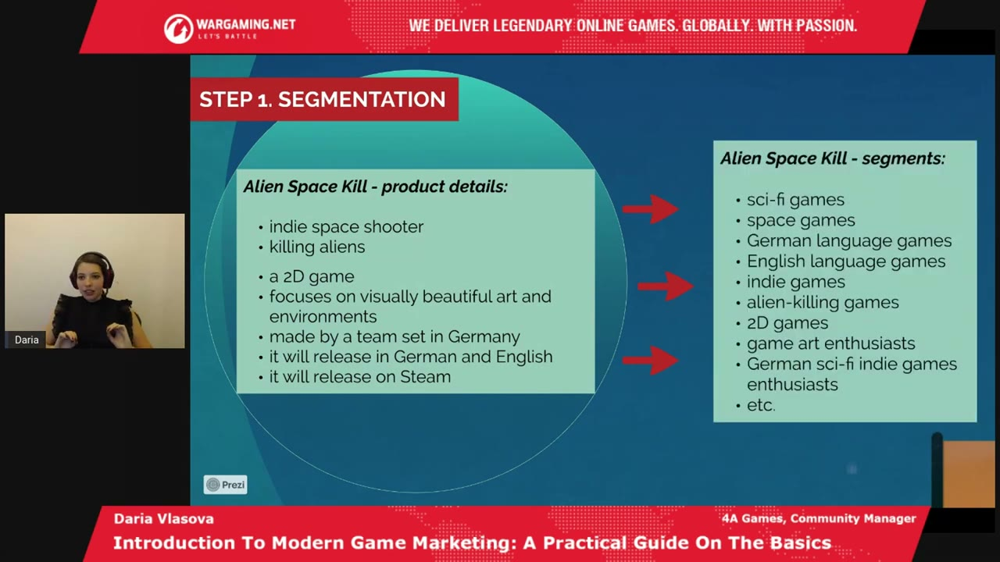
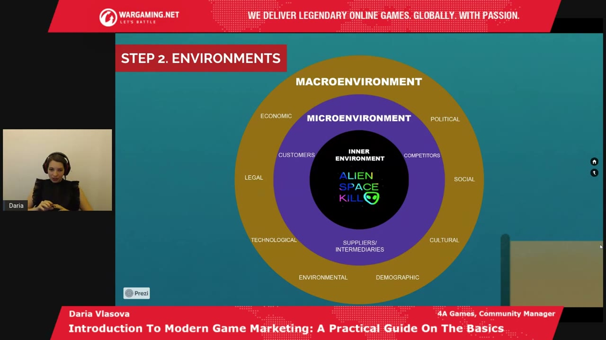
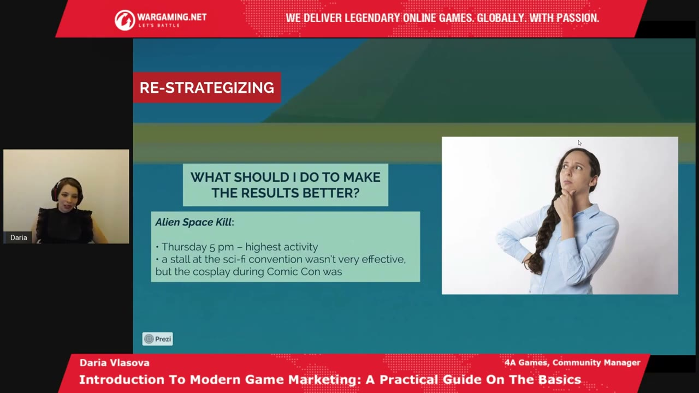

Start here
The overview
Daria Vlasova presents marketing as an ongoing exchange between a studio and the people it hopes to serve. Her process moves from business and project goals through segmentation, environment and audience research, strategy, practical tactics, execution, and revision. A fictional three-person studio developing Alien Space Kill makes the steps concrete. The important connection is between them: choosing a post format or event only makes sense after understanding what the team wants to achieve and what its audience values.
What the snapshots add
- Slides confirm the fictional game and team names, the audience profile, and the three layers of environment analysis.
- The final feedback example shows specific changes rather than merely telling the team to be flexible.
What to take away
- Start with the purpose of the business and project
Studio recognition, finding partners, building a community, and selling a game can call for different marketing work.
- Research the audience before choosing activities
Relevant segments, context, player habits, and available team resources determine which tactics are plausible.
- Treat execution as the start of a learning loop
Feedback should change the schedule, content, and activities rather than merely confirm that a plan was completed.
Marketing connects a studio with a market through a two-way exchange
Vlasova begins by defining the market itself. Like a familiar physical market, the games market connects producers and customers, with other interested parties around them. Studios supply games, players choose what to play, and publishers, investors, and agencies may also affect the exchange. Different types of games and platforms create different markets within that broad picture.
In this framing, marketing is the process of positioning a studio or project among the alternatives available to those customers. It is larger than creating an account, publishing a trailer, or buying an advertisement. Those can be activities within the process, but they are useful only insofar as they help the project reach people for whom it is relevant.
The key idea is circulation of value. A studio offers something beneficial through its game, but the relationship should not stop at sending a product outward and hoping people buy. Players return information through their reactions and feedback. A team can use that information to improve the game, adjust its communication, and become more relevant. Value here includes the experience people receive, rather than being only another name for revenue.
Her running example is a fictional game, Alien Space Kill: an independent game about shooting aliens in space. Even that simple description suggests several possible markets, including indie games, alien-themed games, science fiction, and space games. The rest of the talk expands this example to show how the same project can fit several overlapping audiences.
Why understanding a particular player matters
The popularity of marketing courses, social media advice, and unfamiliar terms can make the subject appear overcomplicated or overrated. Vlasova argues that its prominence reflects the ability to understand individual customers more closely. Instead of assuming a single general public will want the same thing, a team asks how particular people live, what devices they use, and what they already play.
The questions can be concrete: does this person use a phone, a console, or a PC? Which games interest them? If they do not play, what keeps them from doing so? That knowledge may reveal an approach that generic advertising misses. Technology and social platforms make these differences more visible, which is part of why modern marketing contains so many specialized activities.
The purpose of research is therefore practical. It helps a team choose communication that fits someone's actual behavior and interests. The fact that a platform offers a tactic does not itself explain why that tactic belongs in this game's plan.
Build the foundation from business goals and project goals
Before defining a marketing goal, Vlasova asks what the business and the project are trying to achieve. Even a solo developer benefits from this distinction. Releasing the game may be the immediate objective, but the studio may also need recognition, investment, a publisher, collaborators, or enough staff to complete the work at an acceptable quality. Those needs can lead to different audiences and activities.
She gives the fictional studio three founders: Natasha, Denis, and Konstantine. Their initials form NDK Interactive, as the inspected team slide confirms. The example business goal is to become better known in developer communities connected to science fiction. That visibility could create opportunities for exchanging knowledge, getting feedback, meeting collaborators, and encountering media interested in new studios. It is a business goal with potential value even before the game is sold.
The project has its own situation: Alien Space Kill is meant to launch in about a year, and the team has already set up a Facebook page. Its example goals are to build a strong community around the game and strengthen awareness of the game's brand. A studio brand and a game brand are related, but they are not identical. A person may recognize the game without knowing the company, or know the company without following this particular project.
The resulting marketing goals bring those business and project intentions together. In the example, the team wants stronger recognition in relevant developer communities as well as a larger, more engaged audience for Alien Space Kill. This foundation gives later choices a test: does this proposed activity help achieve one of those goals?
Vlasova encourages spending time on this stage because every later step depends on it. A team that begins by imitating another studio's posting schedule may stay busy without knowing whether the work serves its own needs. Clear goals also provide a reference when the growing number of options becomes confusing.
Split a broad market into relevant, viable segments
Segmentation is her first analysis step. She compares a market to a pie divided into pieces: each piece belongs to the larger whole but has characteristics of its own. The aim is not to invent as many labels as possible. It is to identify groups that have a plausible reason to care about this game.
The fictional product now gains more detail. It is a 2D indie space shooter focused on attractive art and environments, made by a team in Germany, intended for German and English release on Steam. The inspected segmentation slide maps those details to categories such as science fiction, space, indie games, alien-killing games, 2D games, the two languages, and game-art enthusiasts. Some of these categories overlap rather than dividing people into exclusive boxes.
Relevance is the filter. A language or theme may describe the game correctly but still provide too little information to identify a useful audience. Vlasova asks whether a segment contains enough people who could want the game and whether they could actually buy it. A group of young children interested only in free games, for example, might not support the intended product even if some thematic interests match.
She recommends beginning with one or a few especially relevant segments, testing the approach, and then using the results to consider others. The example settles on German sci-fi indie-game enthusiasts. That is a narrow market, but narrowness is not automatically a problem if the group is large enough for the team's goals and the economics make sense.
The useful distinction is between a small audience that fits and an enormous audience with little reason to respond. A niche lets a team be specific about the benefit it offers. It still needs evaluation; being specialized is not evidence by itself that the niche can sustain a project.


Examine wider conditions, the industry, and the studio’s own capacity
Each chosen segment sits within an environment. Vlasova separates the wider context, the surrounding industry relationships, and the internal conditions of the studio. The inspected concentric diagram is particularly helpful because the automatic captions initially confuse the macro and micro labels. The outer ring is the macroenvironment, the middle ring the microenvironment, and the centre the inner environment.
The macroenvironment includes economic, political, legal, social, cultural, demographic, technological, and environmental factors. These can affect how a game is released or communicated even though the studio does not control them. She uses differing national requirements and cultural expectations as examples of why the same approach may not transfer unchanged from one country to another. The talk does not provide a country-specific compliance procedure.
The microenvironment is closer to the actual industry: customers, competing studios, suppliers, and intermediaries such as outsourced art providers. Research should look for opportunities as well as threats. Other studios can teach useful approaches, conferences can connect professionals, and players can reveal emerging interests or ways to communicate.
The inner environment is the team's real ability to execute. Does it have enough people, equipment, workspace, and time? Producing beautiful alien short films might seem like a strong promotional idea, but it may be unrealistic for one or two people already fully occupied by development. An attractive tactic is still unsuitable if it consumes resources the project does not have.
For Alien Space Kill, she supplies illustrative opportunities rather than documented research findings. A hypothetical German government space-awareness initiative might be interested in projects reaching young people. Looking at neighboring studios might suggest that beautiful space imagery receives strong reactions. The first is a potential partnership in the wider context; the second is an industry observation that could shape content. Both become useful only when connected to the chosen audience and the team's goals.


Turn a segment into a usable picture of the audience
A target audience is simply the audience the team intends to address. Vlasova analyzes it through four kinds of characteristics. Geographic information asks where people are. Psychographic information asks about values, beliefs, and lifestyle. Behavioral information concerns habits such as when someone uses a phone or how they engage with games. Demographic information includes age, gender, and income where those details affect the decision.
The Alien Space Kill slide presents a deliberately specific hypothetical profile: German players aged 16–25, with a 70% male and 30% female split, mostly students who are not employed. They use mobile devices especially in the morning and before bed, like science fiction, participate in a relevant Facebook group, enjoy virtual space photography, and favor inexpensive indie games on Steam. These details belong to the invented teaching example; they are not measurements of all German science-fiction players.
The purpose of that profile is to guide choices. An audience interested in space photography gives beautiful environments a plausible role in the content plan. A preference for inexpensive games matters to the commercial proposition. A known community and device habit help identify where and how the team might reach people. The research only becomes actionable when the characteristics are connected to decisions rather than collected as trivia.
Translate goals into a strategy, then make the tactics earn attention
Strategy and tactics are where the research becomes a plan. Vlasova asks: how can the team approach its selected audience in order to achieve its marketing goals? Broad intentions become more precise objectives, and tactics are the actions chosen to reach them. The terminology can sound repetitive, so her example keeps returning to the distinction between a studio brand, the game's community, and the particular work needed to develop each.
The resulting strategy for NDK Interactive includes establishing and developing the studio's brand in relevant communities, earning loyal fans for both the studio and the game, developing Alien Space Kill's own community, and increasing recognition of the game in places where interested people already gather. A tactic should have a traceable role within that strategy.
Her recurring test is value and relevance. Posting simply because it is Tuesday or because everyone else posts is not enough. People have limited attention and lives outside the game. Useful content gives them something they want, such as an interesting topic, an appealing experience, a chance to discuss something, or a meaningful connection.
Respecting that attention also supports the two-way relationship introduced at the beginning. A community is more likely to provide useful reactions when it feels the studio is offering something worthwhile. Repeated empty promotion can consume the same team effort while teaching little and giving players no reason to stay.
Offline examples: match each event to a specific purpose
The fictional team considers networking at Berlin Games Week because that activity fits its goal of recognition among developers. An event can be useful without supplying a large number of immediate customers if the desired result is a professional relationship, exchange of expertise, or connection to a partner. The purpose determines how the team should judge it.
Another idea is to cosplay aliens at Berlin Comic Con and give out brochures. Vlasova looks beyond the immediate handout: attendees might ask for photographs, post them, and use a recognizable hashtag. A physical encounter could therefore create additional online exposure. This is a possible secondary effect to plan for, not a guaranteed outcome from dressing up.
A stall at the hypothetical space-awareness convention connects directly to the earlier environment analysis. The tactic has a reason to exist because the theme and audience overlap with the game. Without that connection, “attend a convention” would be a much less useful recommendation.
She also imagines renting a computer club, inviting science-fiction fans, and offering tea and cookies while they play. People arriving from different communities could meet and continue talking afterward. The game would become the shared experience that brought them together. Her interest is not merely getting a build in front of strangers but creating conditions in which a community could begin.
These examples illustrate how one activity may support several goals. A team should look for such opportunities, while still considering whether it has the time, people, and money to carry them out.
Online examples: use audience interests and platform formats
For simplicity, the online portion focuses on Facebook pages and groups. Vlasova recommends understanding the platform's own guidance and presentation conventions. The inspected slide lists short-to-medium text, relevant hashtags, square videos of at least three minutes, native posts, cross-linking with Instagram, partner content, and one to three images. These are the specific suggestions in the recording, not a current specification or universal recipe for reach.
Content ideas come from the product and audience research. Alien-related discoveries could start relevant conversations; videos of planets or beautiful sci-fi environments could showcase the game's visual strengths. A development diary deconstructing concept art would offer an interested viewer something more substantial than another demand to buy.
Stories, questions, and polls can open a discussion rather than only broadcast an announcement. The team supplies a place to talk about something the audience enjoys and receives feedback about what people think. This is the circulation of value expressed as an everyday community activity. The tool matters because of the interaction it enables.
Operational arrangements follow from the same research. The example initially chooses Tuesday and Friday at 5 p.m. because those are assumed to be active times for the audience. The exact days and hour are not Vlasova's recommendation for every project. They show how research becomes a practical schedule that can later be tested.
The hypothetical space-awareness partnership also creates a timing opportunity. If a larger organization announces its initiative and the studio participates, coordinated posting could connect the game to that existing attention. The relationship has to be relevant; attaching unrelated content to a trending subject would not fulfill the same purpose.
Vlasova encourages creative ideas, including ones that initially seem unusual, but keeps the goal-based filter. An idea deserves a trial when research gives the team a reason to think it can reach the intended people and provide something useful. Copying a popular tactic without that reasoning is not the same as experimenting deliberately.
Execute, interpret the response, and revise the plan
Once the foundation, analysis, strategy, and tactics are connected, execution means carrying out the planned work and observing what happens. Results may be better or worse than expected. Either way, Vlasova treats them as feedback to interpret, rather than simply a verdict on whether marketing works.
Her term for the next step is re-strategizing. The Alien Space Kill example learns that Thursday at 5 p.m., rather than Tuesday, produces the strongest activity. It also finds the sci-fi convention stall less effective than the Comic Con cosplay. The inspected slide states both changes. A team should adjust its effort to what actually happened instead of preserving the original plan because it took work to make.
This is a continuing cycle: revise, execute again, read the new response, and revise further. A tactic that worked for five years does not automatically fit a changing audience, platform, or industry. The team needs enough flexibility to keep delivering value under the conditions it faces now.
Her closing practical advice follows that logic. Do not skip research because an idea feels obviously right. Learn from experience and from strong examples, listen to players, experiment when there is a reason, and avoid doing something only because other teams do it. Results can take time, so early disappointment is a reason to learn rather than an automatic reason to stop. When uncertain, return to the original marketing goals and ask which action serves them.


Q&A: accessible research, memorable campaigns, and budget choices
Asked how to research an audience, Vlasova starts with places where that audience already talks. In the fictional case, these include communities about space, space-themed games, and related game art. Observe what people post, what earns reactions, what they comment on, and what they ask to see. Reddit and Discord can provide further discussion of genre-specific interests and expectations. The point is to begin with real audience behavior rather than invent a persona entirely from the team's preferences.
Her favorite campaign example is Red Dead Redemption 2's physical advertising in Berlin. She recalls repeatedly encountering recognizable red posters and character images at transit stops. Over time, those faces became familiar and the campaign seemed part of her daily environment. She ultimately bought the game and remembers missing the posters after they disappeared. This is her personal account of a memorable campaign, not a measured estimate of its conversion rate or proof that an indie team should buy comparable advertising.
On minimum marketing budgets, she declines to name a universal amount. The budget follows the activities needed to meet the goal. Relevant community participation and some online events may require little direct cash, while paid creators differ in audience, reach, and price. Ad configurations likewise affect the estimate a platform supplies. Her broad claim about more precise targeting costing more belongs to the talk and is not a universal rule for every advertising auction.
She recommends exploring suitable free opportunities first and using the same creativity that developers bring to games. A team considering paid media can use a platform's campaign setup to obtain an estimate before deciding what to spend. The useful answer is a method for making the budget specific to a project, rather than a single minimum supposedly valid for every new studio.
Across the questions, the process remains the same: identify the audience, understand what it values, choose an activity with a clear purpose, and learn from the result. The worked example is intentionally simple, but the links between its steps are the substance of the method.
Source & limitations
This is an editorial synthesis of Daria Vlasova - Introduction To Modern Game Marketing: A Practical Guide On The Basics, published by Games Gathering. Timestamp links open YouTube at the corresponding section.
- Based on the complete English automatic captions and 10 inspected snapshots selected around the talk's substantive slides. These stills support the named examples; the intervening video, animations, and demonstrations were not exhaustively reviewed.
- Platform behavior, commercial figures, tool descriptions, and industry examples are presented as the speaker's claims at the time of the recording, not independently verified current guidance.
Inspected snapshots (10)
Selected stills, not continuous video review. Observations below describe the inspected frames.
4:45 ↗
- Market-positioning slide depicts several studio doors, highlighting Your Studio with an arrow labeled Marketing.
11:40 ↗
- Fictional team example names Natasha, Denis, and Konstantine, with arrows into NDK Interactive.
14:05 ↗
- Alien Space Kill example targets release in about one year, already has a Facebook page, and lists community building and brand strengthening as goals.
18:30 ↗
- Segmentation slide maps product details of Alien Space Kill to overlapping categories including sci-fi, languages, indie games, 2D games, and game art enthusiasts.
22:10 ↗
- Concentric diagram labels inner environment, microenvironment (customers, competitors, suppliers/intermediaries), and macroenvironment with economic, political, social, cultural, demographic, environmental, technological, and legal factors.
26:10 ↗
- The same concentric environment diagram remains visible with the internal, industry, and wider-context layers.
30:00 ↗
- Hypothetical audience slide specifies German ages 16–25, 70% male and 30% female, unemployed students, morning and bedtime mobile use, sci-fi Facebook interests, space photography, and inexpensive Steam games.
35:10 ↗
- Strategy slide links studio and game goals to building brands, loyal fans, and relevant communities.
41:20 ↗
- Facebook tactics slide lists short-to-medium texts, relevant hashtags, square videos of at least three minutes, Instagram cross-linking, native posts, partner content, and one to three images beside a mock alien post.
47:30 ↗
- Re-strategizing example changes peak posting time to Thursday 5 p.m. and says a convention stall was less effective than Comic Con cosplay.
Read the timestamped source captions
en-orig · automatic captions. Caption errors and non-speech labels are retained in this source view.
0:00 ↗ [Music]
0:12 ↗ welcome our next speaker diablo who
0:15 ↗ worked in marketing in the gaming
0:17 ↗ industry more than four years
0:20 ↗ uh both on indie and triple a projects
0:22 ↗ she has experience
0:25 ↗ harmony and function
0:27 ↗ and daria you can
0:30 ↗ thank you very much for passing the word
0:32 ↗ to me eugenia uh so hello everyone as if
0:36 ↗ henya said my name is daria and today
0:39 ↗ i'm hoping to give you an introduction
0:40 ↗ to modern game marketing and to give you
0:43 ↗ some practical guide on the basics
0:47 ↗ so um let me begin by giving a small
0:50 ↗ introduction about myself
0:52 ↗ so
0:53 ↗ so that you know who is this person
0:55 ↗ who is telling you all these things so
0:59 ↗ my name is daria as has been mentioned
1:01 ↗ before i'm a bachelor in media and
1:03 ↗ communications with german i'm also a
1:06 ↗ masters in international marketing in
1:08 ↗ manager
1:10 ↗ and management
1:11 ↗ uh i have a far plus years experience in
1:14 ↗ game marketing in various countries i
1:16 ↗ also managed to be a co-author in a book
1:19 ↗ on on successful negotiations i speak
1:22 ↗ russian ukrainian english and german at
1:25 ↗ a native or close to native levels and
1:27 ↗ also some spanish and japanese and my
1:30 ↗ favorite game is red dead redemption 2
1:32 ↗ as you can see in this picture here
1:35 ↗ so
1:37 ↗ thank you very much for coming today to
1:39 ↗ the lecture and i hope you will enjoy it
1:42 ↗ so let me begin by discussing the plan
1:44 ↗ of our presentation so
1:47 ↗ as you can see here there is a little
1:49 ↗ diver who is looking at this tentacle
1:53 ↗ weird kind of monster which is marketing
1:56 ↗ so
1:57 ↗ from these depths of the lake i hope
2:00 ↗ that by the end of this presentation by
2:02 ↗ touching upon all these bubbles here
2:05 ↗ we'll arrive to the surface where there
2:07 ↗ is these wonderful green sunny hills and
2:11 ↗ also a lighthouse which is
2:14 ↗ ideally will be the successful promotion
2:16 ↗ of your project or your studio brand
2:19 ↗ so let me begin by discussing what
2:22 ↗ marketing is
2:25 ↗ so we cannot really discuss what
2:28 ↗ marketing is without a clear
2:30 ↗ understanding of what exactly we mean
2:32 ↗ here by a market
2:33 ↗ usually when people think of markets the
2:37 ↗ associations that they immediately have
2:39 ↗ are a fish market for example or market
2:42 ↗ of antiques
2:43 ↗ and actually the market that we are
2:46 ↗ talking about here is not that much
2:48 ↗ different
2:49 ↗ so at the fish market for example you
2:51 ↗ have fishermen who sell fish to the
2:53 ↗ customers and if the customers like the
2:56 ↗ fish they come back again to those
2:58 ↗ fishermen and buy again
3:01 ↗ here in this presentation we will be
3:03 ↗ talking particularly about the video
3:05 ↗ games market
3:07 ↗ of course there are different types of
3:09 ↗ games markets out there
3:12 ↗ there are aaa games markets for example
3:14 ↗ indie games
3:16 ↗ online games mobile games but because we
3:19 ↗ are limited in the time and scope in
3:21 ↗ this presentation we will touch upon the
3:23 ↗ video games market in particular okay
3:27 ↗ so the video games market consists of
3:30 ↗ the gaming studios the guys who promote
3:34 ↗ uh
3:35 ↗ who have the games who produce the games
3:38 ↗ hopefully you're one of them
3:40 ↗ or you're thinking to become one of them
3:42 ↗ and also of the customers the people who
3:46 ↗ are playing your games
3:48 ↗ of course in the market there are also
3:50 ↗ other stakeholders and stakeholder is a
3:53 ↗ party that is also interested in the
3:56 ↗ market
3:56 ↗ um for example publishers or investors
4:00 ↗ or marketing agencies
4:02 ↗ so this is how the video games market
4:05 ↗ generally looks like
4:08 ↗ now
4:09 ↗ what exactly is marketing then
4:11 ↗ okay so we have the video games market
4:13 ↗ that we just discussed right
4:15 ↗ but
4:16 ↗ now we also want your studio to be a
4:20 ↗ part of this market we want your studio
4:22 ↗ to be in the pool of the other game
4:25 ↗ studios how do we do that exactly to put
4:29 ↗ your studio in a particular market in
4:31 ↗ this case in the video games market
4:34 ↗ we do the art of marketing so basically
4:37 ↗ marketing can be understood as a process
4:41 ↗ of positioning your studio or your
4:43 ↗ project
4:44 ↗ into the pool of gaming studios of
4:46 ↗ projects or projects of the same market
4:50 ↗ okay
4:51 ↗ what is very important here
4:54 ↗ is something called the circulation of
4:56 ↗ value
4:58 ↗ so but what is meant by value here is
5:00 ↗ the benefit that you give to your
5:03 ↗ players your customers your players
5:05 ↗ however you want to call them
5:07 ↗ um and you give this value in the form
5:10 ↗ of a game usually
5:12 ↗ but
5:13 ↗ what is crucial here is to understand
5:15 ↗ that you do not just
5:17 ↗ send your game to people and hope that
5:20 ↗ it will be an amazing game and everyone
5:22 ↗ will buy it
5:23 ↗ no this is a two-way process
5:26 ↗ which means that you supply value for
5:30 ↗ your players
5:31 ↗ in the form of a game usually
5:34 ↗ and you get this value back from the
5:36 ↗ players in the form of feedback feedback
5:39 ↗ that is extremely important because
5:42 ↗ feedback can help you
5:44 ↗ adjust your game adjust your marketing
5:46 ↗ strategy and to be more relevant to your
5:50 ↗ audience if you are relevant
5:53 ↗ this will likely bring you to the best
5:55 ↗ success the highest success that you can
5:58 ↗ have
5:58 ↗ with your game okay we will touch upon
6:01 ↗ these topics a little uh a bit more
6:04 ↗ further in this presentation
6:06 ↗ but let's remember now that what we have
6:09 ↗ in the market is primarily the gaming
6:11 ↗ studios the your players and the value
6:14 ↗ circulation between your studio and
6:18 ↗ their players now let's have an example
6:22 ↗ who doesn't love examples especially in
6:23 ↗ the gaming industry
6:25 ↗ so let's imagine that you are an indie
6:28 ↗ developer okay so you want to create a
6:31 ↗ video game which is about shooting
6:33 ↗ aliens in space
6:35 ↗ and we call it aliens pay scale so you
6:38 ↗ even have a nice
6:40 ↗ logo here for this particular game all
6:43 ↗ right
6:44 ↗ so
6:45 ↗ therefore the resulting markets that
6:48 ↗ would be of interest to you where you
6:50 ↗ could position your game where you could
6:52 ↗ do your marketing
6:54 ↗ include indie games
6:56 ↗ games with aliens
6:58 ↗ sci-fi games
7:00 ↗ space games and there are many many more
7:03 ↗ of them but we will talk about this more
7:05 ↗ part a little bit later in this
7:07 ↗ presentation
7:10 ↗ why do we even need marketing might be
7:13 ↗ your question and you would be quite
7:15 ↗ right because
7:17 ↗ nowadays people think that marketing
7:19 ↗ might be even overrated if we go online
7:22 ↗ we see so many courses so many mentions
7:25 ↗ of social media market targeting
7:28 ↗ uh
7:29 ↗ all of this stuff can be very confusing
7:31 ↗ and people think that this is just some
7:34 ↗ weird science that everyone wants to be
7:36 ↗ a part of these days well short answer
7:39 ↗ marketing is not overrated
7:41 ↗ but it's very popular nowadays and i
7:44 ↗ will briefly explain you why
7:46 ↗ so before even
7:49 ↗ in the previous century
7:51 ↗ um there was more
7:53 ↗ a way of marketing things is that you
7:55 ↗ produce a product and you sell it to the
7:57 ↗ general public
7:59 ↗ when nowadays we are mostly focused on
8:03 ↗ one single person we look at this person
8:06 ↗ and we want to know
8:07 ↗ who this person is what is their
8:10 ↗ behavior on the daily basis
8:12 ↗ how do they use their phones do they use
8:14 ↗ consoles do they use pcs do they play
8:17 ↗ games
8:18 ↗ if yes then what kind of games if not
8:21 ↗ then
8:22 ↗ why not maybe they're just not
8:25 ↗ interested in them yet and we can
8:27 ↗ somehow find out a way find an approach
8:30 ↗ for them to play the game so
8:32 ↗ um
8:33 ↗ you need to ask all those questions
8:36 ↗ about these unique people and of course
8:38 ↗ there is a lot of strategies and art
8:39 ↗ about about that
8:41 ↗ this is primarily the reason especially
8:44 ↗ considering the rise of the technology
8:46 ↗ and the social networks this is
8:48 ↗ primarily the reason why you see so much
8:50 ↗ mentions
8:52 ↗ yes so much mentions of uh marketing
8:55 ↗ these days
8:56 ↗ okay so
8:58 ↗ but let's hope it will be a bit more
9:00 ↗ clear for you uh after this presentation
9:04 ↗ so
9:05 ↗ now that we are done and we have some
9:07 ↗ slight understanding of this tentacle
9:09 ↗ monster marketing in the depths of this
9:12 ↗ lake
9:13 ↗ um
9:14 ↗ we can now move on to the foundation
9:16 ↗ of your marketing strategy
9:19 ↗ okay
9:20 ↗ basically your foundation consists of
9:23 ↗ clearly defining your marketing goals
9:26 ↗ to define your marketing goals you need
9:29 ↗ to first understand what your business
9:31 ↗ goals are and what your project's goals
9:34 ↗ are and we will stop uh in detail in
9:37 ↗ each of those
9:38 ↗ types of goals and explore them okay
9:43 ↗ so let's talk about the business goals
9:45 ↗ okay
9:46 ↗ even
9:47 ↗ if you are a one-person developer
9:50 ↗ you
9:51 ↗ you need to have a certain understanding
9:53 ↗ of where you are
9:54 ↗ going with your game with your project
9:57 ↗ possibly with your studio
9:59 ↗ um
10:00 ↗ of course the first thing that you are
10:02 ↗ thinking of is that i just want to
10:03 ↗ release my game but there are also other
10:07 ↗ other nuances that you want might want
10:10 ↗ to consider to make your game sell more
10:12 ↗ successfully such as establishing your
10:15 ↗ studio brand for example or promoting it
10:17 ↗ further by for instance establishing
10:20 ↗ social networks it can also be about
10:22 ↗ attracting investors and publishers or
10:25 ↗ for instance if you have
10:28 ↗ a small team
10:30 ↗ and you're feeling like maybe guys we're
10:32 ↗ not going to launch this project on time
10:35 ↗ or this is not enough quality because we
10:36 ↗ just don't have enough people
10:38 ↗ you might want to expand your business
10:41 ↗ and this would be a task for business
10:42 ↗ development and you might want you to
10:45 ↗ hire a bit more guys to help you out
10:48 ↗ with your project
10:49 ↗ so you need to set up your business
10:51 ↗ goals before you can move on to your
10:54 ↗ marketing goals
10:56 ↗ um in our example remember that alien
10:59 ↗ space kill game so
11:01 ↗ let's imagine that we have three guys
11:04 ↗ okay
11:04 ↗ natasha dennis and constantin
11:08 ↗ so they worked together on alien space
11:11 ↗ kill and they decided to form a games to
11:15 ↗ a gaming studio called ndk interactive
11:18 ↗ yes very creative thank you very much
11:21 ↗ the name comes from the first letters of
11:24 ↗ their names as you can see
11:26 ↗ okay
11:27 ↗ uh so the guys just sat together and
11:30 ↗ they were
11:31 ↗ probably with some beer and just
11:33 ↗ thinking
11:34 ↗ okay what could be our business goals
11:37 ↗ and of course in reality there are many
11:41 ↗ business goals that a studio might have
11:44 ↗ or even a couple of people who are
11:45 ↗ producing a game might have
11:48 ↗ but for the sake of time and scope of
11:50 ↗ this presentation we will have just one
11:52 ↗ as an example here okay
11:54 ↗ so for the ndk interactive they decided
11:57 ↗ that their goal is their brand of ndk
12:01 ↗ interactive to be better known in the
12:03 ↗ developers communities of the sci-fi
12:05 ↗ genre well because they're producing a
12:08 ↗ game in the sci-fi genre and this is
12:11 ↗ actually a very good um
12:14 ↗ a very good way to exchange knowledge to
12:16 ↗ get some feedback on the project that
12:18 ↗ they are currently having to do some
12:21 ↗ networking maybe even see maybe there
12:23 ↗ are guys who would be interested in
12:25 ↗ collaborating with them on this game or
12:27 ↗ there are some promotional opportunities
12:29 ↗ like there are some media who are
12:31 ↗ lingering in those developers
12:33 ↗ communities who want some fresh
12:36 ↗ fresh ideas fresh studios to write about
12:38 ↗ so
12:39 ↗ all kinds of opportunities can be drawn
12:41 ↗ from this
12:43 ↗ um we'll have this as what as the
12:46 ↗ business goal example for now
12:49 ↗ um
12:50 ↗ now let us move to the project goals
12:54 ↗ of course the first project goals that
12:57 ↗ thing comes to mind is to launch the
12:59 ↗ project and you have it here you see
13:02 ↗ but also there can be other
13:05 ↗ project goals that
13:07 ↗ that you might consider that will help
13:09 ↗ you launch the project in the most
13:11 ↗ efficient way
13:12 ↗ such as uh for instance create awareness
13:15 ↗ about the projects brand like establish
13:18 ↗ communities about it establish social
13:20 ↗ media around it maybe create some events
13:24 ↗ maybe some do offline gatherings you
13:27 ↗ know games gathering
13:30 ↗ also attracts investors to the project
13:33 ↗ can be one of the
13:34 ↗ of the goals you want to achieve
13:37 ↗ so you consider all that
13:39 ↗ and uh with them with our example of
13:42 ↗ alien space skill so what we know about
13:45 ↗ this game is that we want uh the ndk
13:48 ↗ interactive guys they want to release it
13:50 ↗ in about a year
13:52 ↗ the team already set up a facebook page
13:54 ↗ for this uh for this game
13:57 ↗ and therefore their resulting goals
14:00 ↗ would be to build a strong community
14:03 ↗ around alien space scale and to
14:05 ↗ strengthen its brand and promote it
14:07 ↗ further so basically
14:10 ↗ to establish relevant communities around
14:12 ↗ the brand and also to make the brand
14:15 ↗ better known so that we would get a
14:18 ↗ larger pool of potential players who
14:21 ↗ would be interested in the game when it
14:22 ↗ launches okay
14:25 ↗ nice so
14:26 ↗ now that we have down our business goals
14:30 ↗ and project goals let's move on to the
14:32 ↗ marketing goals which is basically
14:34 ↗ answering the question what are my
14:37 ↗ business and project goals combined
14:40 ↗ so
14:41 ↗ as we mentioned before uh our resulting
14:44 ↗ marketing goals therefore would be to
14:47 ↗ strengthen the ndk interactive brand in
14:50 ↗ relevant developers communities
14:52 ↗ build a strong community around alien
14:54 ↗ space skill and strengthen its brand and
14:57 ↗ promote it further
15:00 ↗ so
15:02 ↗ now we have the foundation of your
15:04 ↗ marketing strategy down we understand
15:07 ↗ exactly what kind of goals we want to
15:09 ↗ achieve with our marketing strategy what
15:12 ↗ is very important here is to spend a
15:15 ↗ good time good and have a good thought
15:18 ↗ on your marketing goals because this is
15:20 ↗ the foundation that will always guide
15:23 ↗ you
15:24 ↗ all uh the rest of um of the marketing
15:28 ↗ strategy uh steps that you're going to
15:30 ↗ do next all depend on the foundation
15:33 ↗ that you have laid out and whenever you
15:36 ↗ feel that you're in doubt or you're lost
15:39 ↗ you can always consult your marketing
15:42 ↗ strategy foundation it will always guide
15:44 ↗ you towards the best decision so please
15:46 ↗ spend some more time some more research
15:48 ↗ on this this is really worth it okay
15:52 ↗ okay we have the foundation down now
15:54 ↗ let's move on to the analysis
15:58 ↗ now the analysis is a word that many
16:00 ↗ people uh
16:02 ↗ initially don't like because it's
16:04 ↗ largely associated with huge numbers
16:07 ↗ with graphs with statistics excel and
16:09 ↗ all and so on
16:10 ↗ it doesn't have to be like this
16:13 ↗ and i will try to
16:15 ↗ make it as much fun for you as possible
16:18 ↗ or well maybe not fun as such but at
16:22 ↗ least understandable and clear as
16:24 ↗ possible okay
16:26 ↗ so the analysis consists of three major
16:29 ↗ steps there can be more
16:32 ↗ of course but
16:34 ↗ let's focus on these three because they
16:36 ↗ are the core of any marketing analysis
16:39 ↗ so the first step is always segmentation
16:43 ↗ now let's talk about what segmentation
16:46 ↗ actually is
16:48 ↗ imagine you have a pie a nice
16:50 ↗ rich
16:52 ↗ carrot cake or or the pie you prefer
16:54 ↗ okay
16:55 ↗ um this pie would be our market of video
16:59 ↗ games all right
17:00 ↗ then you get a knife and you cut this
17:03 ↗ pie to various pieces
17:05 ↗ all right
17:06 ↗ each of those pieces
17:09 ↗ will be quite different it will
17:10 ↗ different in size in the texture maybe
17:14 ↗ maybe you messed up and it's not as
17:16 ↗ beautiful as the other pieces you know
17:18 ↗ of that pie so
17:20 ↗ but this there will be one thing in
17:22 ↗ common this all these pieces they will
17:26 ↗ be a part of that large pie okay
17:30 ↗ same here you take a large market like
17:33 ↗ in our case the video games market and
17:36 ↗ you cut it to pieces and those pieces
17:39 ↗ they all are the part of the video games
17:42 ↗ market but they have something on their
17:44 ↗ own that is quite different
17:46 ↗ from the rest okay so to be
17:49 ↗ clearer
17:50 ↗ let's have our example of alien space
17:53 ↗ scale here so what we remember from the
17:56 ↗ previous slides is that
17:58 ↗ it's an indie space shooter and it is
18:01 ↗ about killing aliens
18:03 ↗ but what if i also give you a few more
18:07 ↗ details about it
18:08 ↗ such as that this is a 2d game it
18:11 ↗ focuses on visually beautiful art and
18:13 ↗ environments
18:15 ↗ made by a team set in germany so they
18:17 ↗ produce the game in german in english
18:19 ↗ and it will release on steam okay
18:23 ↗ therefore the segments of the video
18:26 ↗ games market that we might be interested
18:28 ↗ in include
18:30 ↗ sci-fi games space games german language
18:33 ↗ games english language games and so on
18:36 ↗ there can be many many segments that you
18:39 ↗ can think of if you really take your
18:42 ↗ game and try to list its details and see
18:46 ↗ and think
18:47 ↗ what kind of segments i can really
18:49 ↗ address with my game okay there can be
18:52 ↗ more many of them
18:54 ↗ but
18:55 ↗ what is really important here is that
18:57 ↗ it's fine to have this huge list
18:59 ↗ as long as your segments are relevant to
19:04 ↗ your game
19:05 ↗ okay
19:06 ↗ so tr when you're doing this try to stay
19:09 ↗ focused on your game always have your
19:11 ↗ project in mind
19:13 ↗ and when you're listing these things
19:15 ↗ try to understand try to always ask
19:18 ↗ yourself a question
19:19 ↗ is this segment relevant to my game
19:23 ↗ among this
19:24 ↗ number there's probably a huge number of
19:27 ↗ segments of course for any game
19:30 ↗ uh the key here is to find those that
19:32 ↗ are the most relevant
19:35 ↗ how do you understand whether a certain
19:37 ↗ segment is relevant to my particular
19:39 ↗ game
19:40 ↗ well you analyze your segments
19:42 ↗ you try to understand
19:45 ↗ uh what kind like is it possible to have
19:50 ↗ enough players in this segment that will
19:52 ↗ buy my game or maybe your
19:55 ↗ your segment consists only of uh young
19:58 ↗ children who cannot
20:00 ↗ pay for themselves so they prefer free
20:02 ↗ games for instance you know
20:04 ↗ um so is is are there generally enough
20:08 ↗ players who would be interested in this
20:10 ↗ com particular type of the game
20:13 ↗ so
20:13 ↗ you need to select the most relevant
20:17 ↗ segments
20:19 ↗ maybe a few of them you usually start
20:21 ↗ with one or a few
20:23 ↗ segments to to test your strategies to
20:26 ↗ see how they work
20:28 ↗ and then
20:29 ↗ depending on the results you understand
20:31 ↗ which other segments you could have
20:33 ↗ possibly
20:34 ↗ addressed okay
20:36 ↗ so
20:37 ↗ what is also said here is don't be
20:39 ↗ afraid of a niche market
20:42 ↗ niche means that for instance we have
20:44 ↗ this large market
20:46 ↗ called the video games market
20:48 ↗ but here for instance we also have
20:51 ↗ german sci-fi indie games enthusiasts
20:54 ↗ this is also a market okay it's a
20:56 ↗ segment of a market but this is also a
20:58 ↗ small market in itself and this is
21:00 ↗ called a niche market meaning that this
21:02 ↗ is very it has very narrow
21:05 ↗ characteristics on its own okay
21:07 ↗ like
21:08 ↗ it's obviously not as large as the video
21:10 ↗ games market don't be afraid of it as
21:12 ↗ long as you evaluate this niche market
21:16 ↗ as being profitable for you and relevant
21:19 ↗ therefore
21:21 ↗ then it's fine to have it okay then it's
21:24 ↗ fine uh to
21:26 ↗ to try your marketing strategy on it
21:29 ↗ okay
21:32 ↗ for our example of alien space skill we
21:34 ↗ will have german sci-fi indie games
21:37 ↗ enthusiasts
21:38 ↗ market or segment
21:40 ↗ uh as an example
21:43 ↗ so after you did after you're finished
21:46 ↗ with your segmentation what you do is
21:48 ↗ that you take your segments and analyze
21:51 ↗ each of them separately
21:55 ↗ and you analyze them in terms of their
21:57 ↗ environment
21:59 ↗ now what exactly is meant uh by
22:01 ↗ environments here
22:03 ↗ so
22:04 ↗ we have like
22:05 ↗ in the middle your gaming studio here
22:08 ↗ okay where you see aliens pay scale but
22:11 ↗ there are also other forces that exist
22:14 ↗ in this world that might influence your
22:16 ↗ project and also how you may market it
22:19 ↗ for instance there is a micro
22:21 ↗ environment okay this is environment
22:24 ↗ that usually exists independently of
22:27 ↗ your business it can involve political
22:30 ↗ social cultural and many more
22:32 ↗ characteristics of for instance the
22:34 ↗ country that your studio is located in
22:37 ↗ or in the country where you want to
22:40 ↗ publish your game for example
22:42 ↗ so
22:43 ↗ to give you an example
22:45 ↗ um
22:46 ↗ you can
22:47 ↗ perfectly fine publish your game in one
22:50 ↗ country but you might want need to
22:54 ↗ censor some parts of it
22:56 ↗ in
22:57 ↗ in when you want to publish it in other
22:59 ↗ countries because it is required by law
23:01 ↗ there you know
23:03 ↗ so a
23:05 ↗ similar thing
23:07 ↗ happens here with marketing when you're
23:09 ↗ creating your strategy you must consider
23:12 ↗ these nuances depending on
23:15 ↗ the environment you are you want to
23:18 ↗ release
23:19 ↗ uh your project and you want to create
23:21 ↗ your marketing strategy in okay so
23:24 ↗ in that german sci-fi enthusiast in the
23:28 ↗ enthusiasts segment
23:30 ↗ you probably want to consider
23:33 ↗ the german political social cultural
23:35 ↗ situation
23:36 ↗ is this okay to promote this game
23:39 ↗ uh in there like is this politically
23:41 ↗ correct
23:42 ↗ um
23:43 ↗ if you want to release the same game for
23:46 ↗ instance in spain or
23:49 ↗ is is this the same situation there or
23:52 ↗ should they maybe find a different
23:54 ↗ approach which is the likeliest scenario
23:56 ↗ you usually create approaches for
23:58 ↗ different countries which are different
24:00 ↗ from each other you know
24:02 ↗ so you consider those
24:04 ↗ then there is also micro environment
24:06 ↗ which is an environment that is closer
24:08 ↗ to you so it's it's more about your
24:11 ↗ industry
24:12 ↗ uh so here you have customers which are
24:15 ↗ your players competitors which are
24:17 ↗ others other studios
24:19 ↗ and suppliers intermediaries which could
24:22 ↗ be your um
24:24 ↗ art outsource for instance if you're
24:26 ↗ looking for one
24:29 ↗ now
24:30 ↗ it's important to point out that um
24:33 ↗ when you're analyzing these environments
24:35 ↗ you're not only looking for threats like
24:38 ↗ the ones that i mentioned with
24:39 ↗ censorship for example but also for
24:42 ↗ opportunities and a good example in in
24:45 ↗ micro environment
24:47 ↗ is that
24:48 ↗ there is an opportunity to learn
24:50 ↗ something new from other studios like
24:52 ↗ here at games gathering for example
24:54 ↗ where we have many professionals from
24:56 ↗ various spheres from but from the same
24:59 ↗ industry we can learn from each other
25:01 ↗ and uh
25:02 ↗ and apply this to our projects or our
25:05 ↗ studios and be better in what we are
25:06 ↗ doing to
25:08 ↗ to bring more value to our players
25:11 ↗ we can also learn from our players who
25:13 ↗ can set up trends for instance in social
25:16 ↗ networks and we can take advantage of
25:19 ↗ them
25:20 ↗ so
25:22 ↗ this would be the power of
25:23 ↗ microenvironment
25:24 ↗ the inner environment
25:26 ↗ is the environment that exists within
25:29 ↗ your uh studio
25:32 ↗ for instance so do you have enough stuff
25:34 ↗ for example to complete your project is
25:37 ↗ there enough workspace is there enough
25:39 ↗ equipment so those um like for instance
25:43 ↗ if you want to create
25:45 ↗ amazing
25:46 ↗ uh shirt films about aliens and you are
25:50 ↗ just one two persons really spending all
25:53 ↗ the time you have on your game this is
25:55 ↗ probably not the best idea you know
25:57 ↗ although of course it is a great idea
25:59 ↗ and a beautiful
26:00 ↗ one that will draw a lot of attention
26:02 ↗ you may not have a resource for it so
26:05 ↗ um
26:07 ↗ forces that exist inside your studio
26:10 ↗ your business
26:11 ↗ are also the ones you need to consider
26:14 ↗ okay
26:16 ↗ so let's have
26:18 ↗ an example with um
26:21 ↗ with our alien space scale so if you
26:23 ↗ remember we have chosen
26:25 ↗ that segment of german sci-fi indie
26:28 ↗ games enthusiasts and we ask ourselves
26:31 ↗ what are the opportunities and threats
26:33 ↗ here
26:34 ↗ so
26:35 ↗ again because we have a limited scope
26:38 ↗ and time in this presentation
26:40 ↗ we will not discuss threads in so much
26:42 ↗ detail but we'll focus rather on the
26:45 ↗ opportunities
26:46 ↗ and if you remember the ndk interactive
26:49 ↗ guys they're just three guys and they
26:51 ↗ think that they will do fine with their
26:54 ↗ game
26:55 ↗ um so
26:57 ↗ we'll focus on macro environment and
26:59 ↗ micro environment here and for example
27:02 ↗ in terms of the macro environment we
27:04 ↗ found out that
27:06 ↗ german governments sponsor space related
27:08 ↗ projects targeting young people this is
27:11 ↗ a great chance for us to step in and to
27:14 ↗ show our project as well in this program
27:17 ↗ and maybe get some promotional
27:18 ↗ opportunities
27:20 ↗ together with german government which is
27:23 ↗ which is launching this project you know
27:25 ↗ so this this could be an opportunity for
27:28 ↗ us
27:29 ↗ in terms of microenvironment
27:32 ↗ we have been discussing or having a look
27:36 ↗ you know at what other studios in the
27:39 ↗ field are doing and we found out that
27:41 ↗ actually there is a lot of attention
27:44 ↗ um
27:45 ↗ that comes from their audience towards
27:48 ↗ the pictures that have
27:51 ↗ beautiful
27:53 ↗ beautiful imagery of space and
27:57 ↗ some sci-fi imagery as well so we will
28:00 ↗ remember this for now and take advantage
28:02 ↗ of that
28:03 ↗ in the future
28:05 ↗ okay
28:07 ↗ so after you have done your environments
28:10 ↗ analysis
28:12 ↗ we are now moving on to analyzing your
28:15 ↗ audience
28:16 ↗ now
28:17 ↗ it says target audience okay let me be
28:20 ↗ clear about what target exactly means
28:23 ↗ target means to address the audience
28:27 ↗ okay so target audience means the
28:29 ↗ audience that you want to address with
28:31 ↗ your marketing strategy so in our
28:34 ↗ case this is going to be the players of
28:37 ↗ alien space kill and particularly the
28:40 ↗ player the potential players of aliens
28:42 ↗ pay skill who are in that german sci-fi
28:46 ↗ indie
28:47 ↗ games enthusiasts segment okay
28:51 ↗ okay
28:52 ↗ so
28:55 ↗ we need to analyze our audience in terms
28:58 ↗ of
28:59 ↗ various characteristics
29:01 ↗ one of them is geographic where the
29:03 ↗ audience is located their region in some
29:06 ↗ cases maybe even neighborhood
29:09 ↗ psychographic which means what is their
29:12 ↗ lifestyle what are their values and
29:15 ↗ beliefs sometimes that affects your
29:17 ↗ marketing strategy too
29:19 ↗ uh what is their behavior like for
29:21 ↗ example um
29:23 ↗ if you are creating a game for mobile
29:25 ↗ you might be interested how often
29:27 ↗ um your target audience uses their phone
29:32 ↗ do they use it in the morning and before
29:34 ↗ bed or maybe they have a chance to play
29:36 ↗ during the day as well
29:37 ↗ so those things you also need to
29:39 ↗ consider
29:40 ↗ and demographic of course which is age
29:43 ↗ gender
29:44 ↗ income marital status sometimes those
29:47 ↗ things influence um
29:49 ↗ your analysis too to better understand
29:51 ↗ your audience and to give you the
29:54 ↗ example
29:55 ↗ from aliens pay scale
29:58 ↗ we've done some research and we found
30:00 ↗ out that our audience is primarily
30:03 ↗ german in that particular segment our
30:06 ↗ audience is german
30:07 ↗ they are 16 25 years old primarily male
30:11 ↗ they are also mostly unemployed
30:15 ↗ use their mobile devices primarily in
30:17 ↗ the morning and before bed generally
30:19 ↗ like the sci-fi genre and hang out in
30:22 ↗ relevant facebook groups
30:24 ↗ love space virtual photography and
30:27 ↗ favorite inexpensive indie games on
30:29 ↗ steam so probably sounds like the guys
30:31 ↗ that we want to address because our game
30:34 ↗ kind of sounds like that sounds like
30:36 ↗ that as well right
30:37 ↗ so
30:39 ↗ this is the guys that we definitely
30:41 ↗ would be interested in in our case
30:44 ↗ okay so that was the analysis how was
30:47 ↗ the analysis not so bad after all huh
30:51 ↗ okay
30:52 ↗ just give me one second too
30:58 ↗ all right all right
31:00 ↗ okay so
31:02 ↗ we've laid out the foundation
31:04 ↗ for
31:05 ↗ our marketing strategy we've also now
31:08 ↗ done the analysis
31:10 ↗ now we are moving to strategy and
31:12 ↗ tactics
31:13 ↗ and although that might seem a bit
31:17 ↗ difficult and something very very
31:18 ↗ serious
31:20 ↗ actually this is
31:21 ↗ probably
31:22 ↗ one of the most exciting steps on your
31:26 ↗ way to this green heels here
31:28 ↗ where your promotion takes place because
31:32 ↗ strategy and tactics is the place where
31:34 ↗ you can get really creative and this is
31:37 ↗ the part of marketing that most people
31:40 ↗ love most
31:42 ↗ okay so
31:44 ↗ what you do here is that uh
31:47 ↗ you create strategy based on your
31:50 ↗ marketing goals
31:51 ↗ and then you try to achieve those
31:54 ↗ strategical goals
31:56 ↗ by uh creating by thinking of certain
32:00 ↗ ways how you could do this and these
32:02 ↗ ways are called your tactics okay
32:06 ↗ so you ask yourself a question how do i
32:08 ↗ approach the target audience to achieve
32:10 ↗ my marketing goals and this is uh what
32:14 ↗ responds to that question strategy and
32:16 ↗ tactics
32:17 ↗ however
32:18 ↗ before we start discussing strategy and
32:21 ↗ tactics we will focus once again on a
32:24 ↗ very important thing
32:25 ↗ whichever approach you take to address
32:28 ↗ your audience you must always bring
32:30 ↗ value to them
32:32 ↗ don't just post something because it's
32:35 ↗ time to post something or because
32:37 ↗ everybody posts something
32:39 ↗ you always have to do something that
32:41 ↗ brings value
32:43 ↗ okay and that is relevant to your
32:45 ↗ particular project to your particular
32:48 ↗ studio okay
32:50 ↗ so
32:51 ↗ let's be honest all of us have lives
32:54 ↗ and we don't want to spend our lives on
32:58 ↗ something that just eats up our
33:00 ↗ attention and doesn't give us anything
33:02 ↗ okay
33:04 ↗ make sure that
33:06 ↗ you respect this when you are creating
33:08 ↗ your marketing strategy that whichever
33:10 ↗ content you you create or however
33:14 ↗ way you you come up with
33:16 ↗ uh to attract attention to your product
33:19 ↗ actually respects your players and their
33:22 ↗ attention in the time that they dedicate
33:24 ↗ to you because if you don't do this
33:27 ↗ no one wants to hang out or to be a part
33:30 ↗ of something that just
33:33 ↗ posts bad content or just doesn't you
33:36 ↗ feel like
33:36 ↗ nobody cares and and you know like
33:39 ↗ what's going on there like i don't want
33:41 ↗ to be a part of something that just just
33:43 ↗ weird some weird kind of stuff you know
33:46 ↗ no one wants to be a part of that
33:48 ↗ everybody wants um
33:50 ↗ to be a part of something that actually
33:53 ↗ brings some value to their lives okay
33:56 ↗ so these two words value and relevance
33:59 ↗ they always have to follow uh your
34:02 ↗ strategy like every time when whichever
34:06 ↗ approach you take whenever you create
34:08 ↗ some something new you always have to
34:11 ↗ ask yourself a question is this relevant
34:13 ↗ to my particular case is this relevant
34:16 ↗ to my audience
34:17 ↗ and does it bring the audience the value
34:20 ↗ okay
34:22 ↗ so
34:23 ↗ uh
34:24 ↗ let's move on to discuss to discussing
34:27 ↗ the strategy
34:29 ↗ so
34:30 ↗ remember the marketing goals that we put
34:34 ↗ together a little bit in the beginning
34:36 ↗ of this presentation
34:38 ↗ so
34:39 ↗ to remind you those goals were to
34:42 ↗ strengthen the studio brand in relevant
34:45 ↗ developers communities
34:47 ↗ to build a strong community around alien
34:49 ↗ space skill
34:50 ↗ and to strengthen it and promote it
34:53 ↗ further okay
34:55 ↗ so from these marketing goals we have
34:59 ↗ resulting strategy okay so the marketing
35:03 ↗ goals they turn into strategic goals
35:06 ↗ um
35:07 ↗ which in our case would be to establish
35:10 ↗ their studio branding communities
35:13 ↗ to promote and develop the brand
35:16 ↗ also get loyal fans around both brands
35:20 ↗ develop the communities of alien space
35:22 ↗ skill and enhance its brand in relevant
35:26 ↗ communities so
35:28 ↗ although now that i am
35:31 ↗ the time saying this out loud this all
35:33 ↗ may seem like confusing and kind of the
35:36 ↗ same things and that's totally
35:38 ↗ understandable
35:39 ↗ um
35:40 ↗ but actually if you dig a bit a bit
35:43 ↗ deeper here you will see that uh what
35:47 ↗ you generally like your marketing goals
35:48 ↗ are the general ideas that you want to
35:51 ↗ achieve the strategic goals are the
35:53 ↗ precise things
35:55 ↗ you need to do you need to achieve
35:58 ↗ so that you would get that bigger
36:00 ↗ picture that that rather general picture
36:02 ↗ of your marketing goals okay
36:05 ↗ um we will move on to tactics now and
36:08 ↗ hopefully um
36:10 ↗ the the tactics that i suggest there
36:13 ↗ would be
36:14 ↗ will help you understand
36:16 ↗ how the how the strategic goals work
36:19 ↗ better
36:20 ↗ okay
36:21 ↗ so
36:22 ↗ again tactics is the way of achieving
36:25 ↗ those strategic goals
36:27 ↗ now for our case of alien space skill
36:31 ↗ we will divide our tactics into offline
36:35 ↗ activities and online activities let's
36:38 ↗ start from the offline activities
36:41 ↗ so
36:43 ↗ the ndk interactive guys they were
36:45 ↗ sitting together and thinking okay what
36:47 ↗ can we do to achieve our
36:50 ↗ uh strategic goals and they came up with
36:52 ↗ a few ideas
36:54 ↗ so for instance offline
36:56 ↗ they decided they want to network at
36:58 ↗ berlin games week which will help to
37:02 ↗ enhance
37:03 ↗ uh which will which addresses
37:05 ↗ their goal of enhancing their brand in
37:09 ↗ developers communities remember so this
37:11 ↗ is relevant
37:13 ↗ they decided to network at berlin games
37:15 ↗ week
37:16 ↗ also cosplay aliens at berlin comic con
37:20 ↗ and give out brochures now here um
37:25 ↗ although it seems like a good idea in
37:27 ↗ itself
37:29 ↗ actually brings even more opportunities
37:31 ↗ that can be seen on the first site for
37:34 ↗ instance
37:35 ↗ um okay you cosplay aliens of berlin
37:38 ↗ comic con and you give out brochures but
37:40 ↗ it was the likely scenario is that many
37:42 ↗ people will want to take pictures with
37:44 ↗ you and possibly uh publish them on
37:47 ↗ instagram
37:49 ↗ and if you teach them which hashtag they
37:51 ↗ could use
37:52 ↗ uh this could actually get more
37:55 ↗ attention to your game get get more uh
37:58 ↗ people interested
38:00 ↗ although this is not an immediate idea
38:03 ↗ not an immediate way
38:05 ↗ of your tactics that you thought of
38:08 ↗ uh primarily you know
38:11 ↗ so these opportunities they all they
38:13 ↗ often exist that you do not see right
38:15 ↗ away
38:17 ↗ so whenever you
38:19 ↗ see one lingering at the horizon you
38:21 ↗ know make sure you take advantage of it
38:24 ↗ okay uh have us tell it the sci-fi
38:27 ↗ convention organized by the government
38:29 ↗ space awareness program that's pretty
38:32 ↗ self-explanatory
38:33 ↗ uh that's the one by the way from the
38:37 ↗ macro environment remember that the
38:40 ↗ government was launching that space
38:41 ↗ program for the for companies that want
38:44 ↗ to target young people and relevant to
38:46 ↗ space that's related to that
38:49 ↗ also renting a computer club and
38:51 ↗ inviting sci-fi fans to play the game
38:53 ↗ they're providing some cookies and tea
38:56 ↗ yes so imagine you advertise this event
38:59 ↗ at various places
39:01 ↗ on uh on the internet for example
39:04 ↗ and people from different communities
39:06 ↗ from different social networks they come
39:08 ↗ for your event and they
39:10 ↗ get to know each other and hey like 10
39:13 ↗ minutes past you already have a
39:15 ↗ community for alien space skill right in
39:17 ↗ front of you here playing your game
39:20 ↗ and
39:21 ↗ the best case scenario is that they
39:23 ↗ continue
39:25 ↗ chatting or having some friendship after
39:28 ↗ your event
39:29 ↗ and what connected them
39:31 ↗ alien space skill that's awesome you
39:33 ↗ already laid out some kind of foundation
39:36 ↗ for a community
39:38 ↗ and probably when your game comes out uh
39:41 ↗ people will already expect it and
39:43 ↗ definitely check it out because they
39:44 ↗ remember this is alien space scale that
39:46 ↗ brought them together
39:48 ↗ so this is another example of that
39:50 ↗ opportunity lingering in the horizon you
39:52 ↗ know like you don't just come up with
39:54 ↗ ideas you also try to look at them like
39:58 ↗ from the top and try to see whether
40:00 ↗ there is something else
40:02 ↗ that
40:03 ↗ that this opportunity can bring to you
40:06 ↗ okay
40:08 ↗ so online uh
40:10 ↗ let's talk about online tactics
40:13 ↗ um
40:14 ↗ for again this is the sake of time and
40:17 ↗ scope uh we'll focus on facebook page
40:19 ↗ and facebook groups uh here in this
40:22 ↗ presentation
40:24 ↗ so a big advice i can give is that
40:27 ↗ always take advantage of the algorithms
40:30 ↗ on that social network that you are
40:32 ↗ using because
40:34 ↗ algorithms is something that will always
40:38 ↗ push your content further if you're
40:40 ↗ using
40:41 ↗ um if you're using the guideline that
40:44 ↗ the social network provides for this do
40:46 ↗ not ignore those guidelines there can be
40:48 ↗ many there they can be a bit confusing
40:52 ↗ try spending some time on those and
40:55 ↗ figuring out
40:56 ↗ which one suits your needs best
40:58 ↗ like in the case of facebook for example
41:01 ↗ we might want to use short to medium
41:03 ↗ text
41:04 ↗ using hashtags relevant to the game at
41:07 ↗ least three minutes of videos square
41:09 ↗ formatted
41:11 ↗ um instagram and facebook are one
41:13 ↗ company now so
41:15 ↗ we might want to cross link some content
41:17 ↗ with instagram
41:19 ↗ because facebook is quite friendly
41:21 ↗ towards it we would also want to post
41:23 ↗ natively
41:25 ↗ do some partner content possibly with an
41:28 ↗ influencer and tag them as well to
41:31 ↗ address their audience too and
41:35 ↗ include some images as well one or three
41:37 ↗ for example because
41:39 ↗ facebook really crops
41:41 ↗ the images in this number
41:44 ↗ in these numbers quite well quite
41:46 ↗ visually friendly
41:48 ↗ um
41:49 ↗ in terms of the content uh
41:52 ↗ we can publish about aliens related
41:54 ↗ discoveries
41:55 ↗ about our game in particular like
41:58 ↗ showcasing videos of planets and so on
42:01 ↗ and including them into stories and
42:03 ↗ actually
42:05 ↗ stories is a very powerful tool uh take
42:08 ↗ advantage of the stories because their
42:10 ↗ functionality of giving polls and
42:13 ↗ establishing questions
42:15 ↗ is really something that
42:17 ↗ that lets you engage with your audience
42:20 ↗ and have discussions with them and
42:22 ↗ remember that
42:24 ↗ circulation of value so you don't only
42:27 ↗ give them value by allowing space by
42:30 ↗ setting up space where they could
42:32 ↗ discuss their favorite topics but also
42:34 ↗ you get feedback from them so it's a
42:36 ↗ two-way communication that you really
42:38 ↗ want to facilitate when you're creating
42:40 ↗ your marketing strategy
42:42 ↗ a beautiful sci-fi environments
42:45 ↗ especially considering that our alien
42:47 ↗ space skill um is really focusing on
42:50 ↗ these
42:51 ↗ and also raising relevant discussions in
42:53 ↗ the community to keep the topics live
42:56 ↗ that could be a few suggestions for the
42:58 ↗ content here on the smoke up you see um
43:02 ↗ a video
43:03 ↗ titled deconstructing alien space skill
43:05 ↗ concept art which could be your
43:08 ↗ development diary for example
43:10 ↗ development diary for alien space skill
43:12 ↗ in particular
43:14 ↗ yeah
43:15 ↗ remember whatever you do you always
43:17 ↗ think of value and relevance once again
43:20 ↗ reminding you
43:22 ↗ so now that you have laid out your
43:24 ↗ tactics uh you might think of
43:28 ↗ arrangements for these tactics for
43:30 ↗ instance to post on tuesday and friday
43:32 ↗ at 5 00 pm because your research shows
43:34 ↗ that
43:35 ↗ this is
43:36 ↗ this is the time and
43:38 ↗ the times and dates when um
43:41 ↗ your audience is most active
43:44 ↗ uh we also expect to rise on the trend
43:46 ↗ on the german space and post with it
43:49 ↗ uh so
43:51 ↗ what is meant here is that
43:53 ↗ that german space program that wants to
43:56 ↗ target younger generations to involve
43:58 ↗ them more into the space topics
44:01 ↗ um
44:02 ↗ they will announce for example
44:06 ↗ their program in some time
44:08 ↗ and you know you will know about it
44:10 ↗ because you might be a part of this
44:11 ↗ program as in decay interactive
44:14 ↗ and when they do you want to post that
44:17 ↗ you are a part of this program at about
44:20 ↗ the same time because uh assuming that
44:23 ↗ german space program has many followers
44:26 ↗ that means that when they post something
44:28 ↗ that generates reaction
44:30 ↗ uh this will
44:31 ↗ give like a bump to the trend on this
44:34 ↗ topic okay
44:36 ↗ and if you do this at about the same
44:38 ↗ time you can take advantage of writing
44:41 ↗ this wave of trend as well and attract
44:43 ↗ more attention maybe even have some
44:46 ↗ audience from
44:47 ↗ the german space program coming to your
44:50 ↗ page to check out
44:52 ↗ what kind of
44:54 ↗ stuff you do and since you
44:56 ↗ are relevant it's likely many people are
44:57 ↗ going to follow you as well
45:00 ↗ there are of course more things that you
45:02 ↗ can do such as create relevant websites
45:06 ↗ participate in relevant discussions
45:08 ↗ there are really many things and
45:12 ↗ just remember that you can get
45:14 ↗ as creative as you want when you are
45:17 ↗ thinking of your tactics
45:19 ↗ but the most important here thing here
45:21 ↗ is that your tactics
45:24 ↗ needs to be relevant i know i said this
45:26 ↗ already but
45:27 ↗ um
45:28 ↗ i mean don't block your ideas because
45:30 ↗ they seem unreal or stupid
45:33 ↗ there's no
45:35 ↗ stupid ideas in creativity okay
45:38 ↗ it can be an absolutely out of your head
45:41 ↗ idea
45:42 ↗ in terms of creativity
45:45 ↗ just make sure if if it it's relevant
45:48 ↗ and you think that and your research
45:50 ↗ shows that this idea is going to bring
45:52 ↗ you their desired result
45:54 ↗ then go for it uh you never know what's
45:57 ↗ going to be the next big thing maybe
45:59 ↗ your game is the next big thing okay or
46:01 ↗ maybe your marketing is the next big the
46:03 ↗ next big thing sorry
46:05 ↗ so
46:06 ↗ let your ideas go
46:08 ↗ okay
46:10 ↗ you laid out the strategy and tactics
46:12 ↗ now you come to execution yes
46:15 ↗ all this huge work
46:17 ↗ was done the the worst
46:20 ↗ the most difficult part is done
46:22 ↗ now you're coming to the execution of
46:24 ↗ your strategy
46:25 ↗ well done you are doing what you planned
46:29 ↗ and now you see like a few golden fishes
46:32 ↗ here it's the results okay so you're
46:35 ↗ already seeing some fish nice
46:38 ↗ yay you got some results that might be
46:40 ↗ something that you expected to get
46:44 ↗ maybe something better that's amazing
46:47 ↗ maybe something not quite good maybe
46:49 ↗ something not that you quite expected
46:52 ↗ but that's fine because
46:54 ↗ what's important here is that you're
46:56 ↗ getting feedback and you can act on that
46:58 ↗ feedback and there are many ways that
47:01 ↗ you can act on there are various tools
47:03 ↗ existing on the web uh that
47:05 ↗ and in real life like your eyes for
47:07 ↗ instance they all exist that will help
47:10 ↗ you interpret that feedback and to act
47:13 ↗ on it
47:14 ↗ acting on the feedback is the final step
47:18 ↗ of your strategy it's called risk
47:20 ↗ strategizing
47:21 ↗ when you have the feedback and you
47:23 ↗ analyzed it you think of how you could
47:25 ↗ make your results better
47:28 ↗ uh and in the case of alien space scale
47:30 ↗ for example we found out that
47:33 ↗ instead of tuesday it was thursday 5 p.m
47:35 ↗ that when you had the largest activity
47:38 ↗ on um among the community so we might
47:41 ↗ want to post at this time now
47:44 ↗ also install the sci-fi convention
47:46 ↗ wasn't very effective but the cosplay
47:48 ↗ during coming was probably those
47:50 ↗ instagram posts of people who took
47:53 ↗ pictures with you
47:54 ↗ uh really did bring some results after
47:57 ↗ all
47:57 ↗ okay
47:59 ↗ and this is
48:00 ↗ kind of a never-ending process you
48:02 ↗ re-strategize
48:04 ↗ you apply this new strategy you execute
48:06 ↗ it you see the results and um
48:10 ↗ you act on those results again and then
48:12 ↗ you again re-evaluate so this is like a
48:14 ↗ never-ending cycle and it's very
48:16 ↗ important not to be stuck in one place
48:20 ↗ many companies do that because they are
48:23 ↗ afraid of
48:24 ↗ because they think that something that
48:27 ↗ has been bringing
48:29 ↗ some value some results for the past
48:32 ↗ five years will do this
48:35 ↗ even in future which may not be the case
48:37 ↗ especially considering that we are in
48:39 ↗ game development which is a very dynamic
48:41 ↗ industry and considering all the
48:43 ↗ technological change that is uh coming
48:46 ↗ these days we always have to be uh on
48:50 ↗ top of things
48:52 ↗ uh to make sure we are relevant to the
48:54 ↗ audience and we are
48:57 ↗ we are bringing them the value that is
48:59 ↗ that represents the current situation of
49:02 ↗ technology of ideas of the industry
49:05 ↗ we're trying just to be the best for
49:07 ↗ them
49:07 ↗ and this us make and this makes us to be
49:11 ↗ the best to ourselves as well
49:14 ↗ okay
49:15 ↗ so to sum up this presentation
49:18 ↗ we start from the foundation from
49:20 ↗ defining the marketing goals
49:23 ↗ then through the analysis to strategy
49:25 ↗ and tactics to execution
49:28 ↗ interpreting feedback and rest
49:30 ↗ strategizing
49:32 ↗ um
49:34 ↗ so now to
49:35 ↗ give you some helpful advice that will
49:37 ↗ hopefully get you through this journey
49:41 ↗ by the way have a look you're already
49:43 ↗ next to those green hills okay so to
49:46 ↗ give you some advice that will hopefully
49:49 ↗ help you to get to those hills faster
49:53 ↗ would be to not to skip the steps okay
49:56 ↗ it's a huge temptation
49:58 ↗ to think that okay i feel this is right
50:01 ↗ the right thing to do i'm going to do
50:03 ↗ this
50:03 ↗ no
50:05 ↗ okay well yes but also no because um
50:10 ↗ the more experience you have in this uh
50:12 ↗ of course the experience sometimes will
50:14 ↗ let you know
50:16 ↗ uh which idea to take and which idea is
50:19 ↗ probably not as good
50:21 ↗ but if you just think that i know these
50:24 ↗ guys i know what they want i'll do this
50:26 ↗ for them and that for them that's
50:28 ↗ probably not the best approach
50:31 ↗ research is the approach that will give
50:32 ↗ you a solid result and you will not
50:34 ↗ spend extra time on
50:36 ↗ redoing things just because you thought
50:39 ↗ they would be nice you know and because
50:41 ↗ everybody does that
50:44 ↗ uh learn from the best your experience
50:46 ↗ something i already mentioned uh be
50:48 ↗ flexible and listen to your audience and
50:51 ↗ don't just ignore them
50:53 ↗ there are always valuable insights in
50:56 ↗ that come from your audience
50:58 ↗ don't lose hope and believe in what you
51:00 ↗ do it's possible yes of course
51:03 ↗ uh more often than not you will not get
51:05 ↗ huge results immediately but the more
51:07 ↗ you do this the better you become in
51:10 ↗ this and therefore the better results it
51:12 ↗ brings so don't give up it's important
51:15 ↗ uh don't be afraid of experiments again
51:18 ↗ as long as they are relevant to what you
51:21 ↗ want to achieve and as long as they
51:22 ↗ bring value
51:25 ↗ they are fine to take on
51:27 ↗ don't follow the hurt make sure you are
51:29 ↗ doing what's needed for your particular
51:32 ↗ project and for your particular audience
51:35 ↗ when in doubt check your marketing goals
51:37 ↗ they will always guide you towards the
51:39 ↗ best decision that's what i mentioned
51:41 ↗ before always remember your foundation
51:44 ↗ it will always guide you whenever you
51:46 ↗ are in doubt
51:49 ↗ remember valiant relevancy probably your
51:51 ↗ two most hated words by now
51:53 ↗ and good luck yes uh it's possible you
51:56 ↗ have to believe in this and just not
51:59 ↗ give up everybody was in the beginning
52:02 ↗ once
52:03 ↗ thank you for your attention do you have
52:05 ↗ any questions
52:12 ↗ nice thank you so much
52:15 ↗ on questions the first question is
52:19 ↗ what instruments did you use to make an
52:21 ↗ audience research
52:24 ↗ uh to make the audience research
52:27 ↗ uh okay so basically what you need to do
52:30 ↗ is when you decided uh which particular
52:34 ↗ segments you want to address uh you need
52:37 ↗ to find out where they are
52:40 ↗ like
52:41 ↗ possibly
52:42 ↗ social media is always a great tool to
52:45 ↗ start from
52:47 ↗ just for the sake of making it a bit
52:49 ↗ simpler in terms of explanation if we
52:51 ↗ take the example of alien space skill
52:55 ↗ you would need to go to relevant
52:57 ↗ communities about space about games
53:01 ↗ set in space about gaming art related to
53:05 ↗ space and you will see what kind of
53:07 ↗ stuff people post
53:09 ↗ uh what brings uh the majority of
53:12 ↗ reactions what kind of stuff of content
53:14 ↗ brings the majority of reactions
53:17 ↗ what do people command
53:19 ↗ what do people what what people would
53:21 ↗ like to see uh in terms of content there
53:23 ↗ sometimes there are some wishes
53:25 ↗ sometimes people even suggest the
53:27 ↗ content themselves
53:28 ↗ this is a good start
53:30 ↗ when you got that start laid out you
53:32 ↗ already uh
53:34 ↗ you already have a basic idea of of the
53:38 ↗ guys or what they want what they expect
53:40 ↗ this will set up your this would be like
53:43 ↗ a starting point from your research then
53:46 ↗ you can um
53:48 ↗ go to communities like credit and
53:50 ↗ discord for example
53:52 ↗ those have a lot of insight
53:55 ↗ of on what
53:57 ↗ people in in a particular um in a
53:59 ↗ particular genre for example might be
54:01 ↗ interested in so as long as you get
54:04 ↗ those down
54:05 ↗ you will already have a large idea of
54:07 ↗ what your audience is thinking what they
54:10 ↗ want what their
54:12 ↗ what their behavior is in terms of your
54:14 ↗ in terms of this particular genre and
54:16 ↗ what they want to see and hear this will
54:18 ↗ give you a chance
54:20 ↗ to implement that
54:22 ↗ perhaps in your marketing strategy
54:26 ↗ thank you for your answer
54:28 ↗ the next question
54:29 ↗ may you give an example of your favorite
54:31 ↗ marketing companies maybe the one you
54:34 ↗ have
54:35 ↗ made in 4a games
54:38 ↗ well uh
54:39 ↗ we all know what an nda here is right so
54:42 ↗ i cannot talk exactly unfortunately
54:44 ↗ about 4a games but i can definitely give
54:47 ↗ a favorite marketing example of a game
54:50 ↗ which would be
54:52 ↗ actually which would be red dead
54:54 ↗ redemption too uh i lived in berlin in
54:57 ↗ that time and interestingly enough uh
54:59 ↗ this marketing campaign wasn't online it
55:02 ↗ was offline
55:04 ↗ and the guys whoever created that
55:06 ↗ marketing campaign what they did is that
55:08 ↗ they uh at every bus stop and at every
55:11 ↗ metro station you had all possible space
55:15 ↗ left for advertising or for maps or
55:18 ↗ whatever they covered this all with
55:21 ↗ promotional
55:22 ↗ posts or maps from reddit redemption 2.
55:26 ↗ and when you are there and you are stuck
55:29 ↗ or you're just waiting for a bus or a
55:31 ↗ train you look at all this and you are
55:34 ↗ already like
55:35 ↗ at that time i didn't even know uh
55:37 ↗ particularly like what that game is
55:39 ↗ about but i was like see looking at
55:41 ↗ those faces and you know it's raining
55:44 ↗ and it's it's dull uh because it i think
55:46 ↗ it was march or april
55:48 ↗ and you're just standing next to arthur
55:51 ↗ morgan and you're like okay what's up
55:53 ↗ dude so i've seen your face maybe like
55:55 ↗ 15 times today maybe
55:58 ↗ maybe there is something in you so shall
56:00 ↗ we like have a chat or something so they
56:03 ↗ are constantly present in your space
56:05 ↗ like outside of your work home or
56:09 ↗ uh
56:10 ↗ or studying like or in university for
56:12 ↗ example they're always around you and
56:14 ↗ you feel like you're a part of it like
56:17 ↗ with some time you just feel like you're
56:18 ↗ a part of it basically i just bought the
56:20 ↗ game after this marketing strategy
56:21 ↗ because
56:22 ↗ when when all the posters were gone i
56:25 ↗ felt like i missed them
56:27 ↗ you know it's also red dead redemption
56:29 ↗ is also very red so like in in the
56:31 ↗ gloomy weather this is like the first
56:33 ↗ thing you see these red posters
56:36 ↗ and you're like yeah i miss them so
56:38 ↗ that's why i bought them
56:42 ↗ thank you for your answer and probably
56:45 ↗ the last question for today
56:49 ↗ what is a minimal budget for marketing
56:52 ↗ for entirely new indie game studio and
56:55 ↗ the game
56:58 ↗ um
56:59 ↗ again that really depends on what you
57:02 ↗ want to do
57:04 ↗ there are a bunch of things you can do
57:06 ↗ for free actually
57:08 ↗ if you go to social media for example
57:11 ↗ like creating events trying to get
57:14 ↗ people posting in in relevant groups is
57:17 ↗ most likely all for free
57:19 ↗ of course if you want to go more
57:22 ↗ with influencers and paid marketing this
57:25 ↗ will also depend because again
57:28 ↗ depending on what kind of influencer you
57:30 ↗ want to attract they have different
57:31 ↗ audience they have a different number of
57:34 ↗ people who follow them so
57:37 ↗ you would need to consider which ones
57:40 ↗ you are looking for first which ones you
57:43 ↗ would need
57:44 ↗ to set
57:45 ↗ to meet your particular goal okay if we
57:48 ↗ talk about paid ads for example
57:50 ↗ um if you go to facebook paid ads or
57:54 ↗ google paid ads
57:55 ↗ you will see that there are so many
57:58 ↗ categories so many nuances that you need
58:00 ↗ to fill in
58:01 ↗ um
58:02 ↗ that
58:03 ↗ it all
58:04 ↗ is a part of pricing that you will get
58:06 ↗ in the end
58:09 ↗ remember that a slide that i had
58:12 ↗ somewhere in the beginning about then
58:14 ↗ and now that now we are talking about
58:16 ↗ one particular person
58:17 ↗ the more you want to target this one
58:20 ↗ particular person uh
58:23 ↗ like the better you want to target this
58:25 ↗ one particular person the
58:27 ↗ higher will be your spend
58:30 ↗ the more general uh
58:32 ↗ nuances you use when you create your
58:34 ↗ paid ads the less you will spend okay
58:38 ↗ so um you need to try this out
58:42 ↗ if and
58:43 ↗ of course
58:45 ↗ the
58:47 ↗ neither facebook nor google for example
58:49 ↗ they will charge you in advance you will
58:51 ↗ be able to create uh your strat
58:53 ↗ like your ad for example
58:56 ↗ and it will give you an estimate and
58:58 ↗ this estimate will give you a good idea
59:00 ↗ of what kind of budget you would need if
59:03 ↗ you want to have a marketing budget for
59:06 ↗ page sources
59:07 ↗ but my advice is to try to first take
59:10 ↗ advantage of everything available online
59:12 ↗ use your head if you're a game developer
59:14 ↗ you're creative to some extent okay
59:17 ↗ this is the same kind of creativity try
59:19 ↗ to think of all the things you can do
59:21 ↗ for free then go for on for paid sources
59:24 ↗ i would say
59:27 ↗ okay i think that's all i think if you
59:30 ↗ have any other questions you can write
59:33 ↗ via the messenger or meet maybe offline
59:37 ↗ this weekend so thank you again hope you
59:40 ↗ see thank you
59:42 ↗ yes thank you very much for having me
59:44 ↗ and good luck guys believe in yourself
59:55 ↗ [Music]